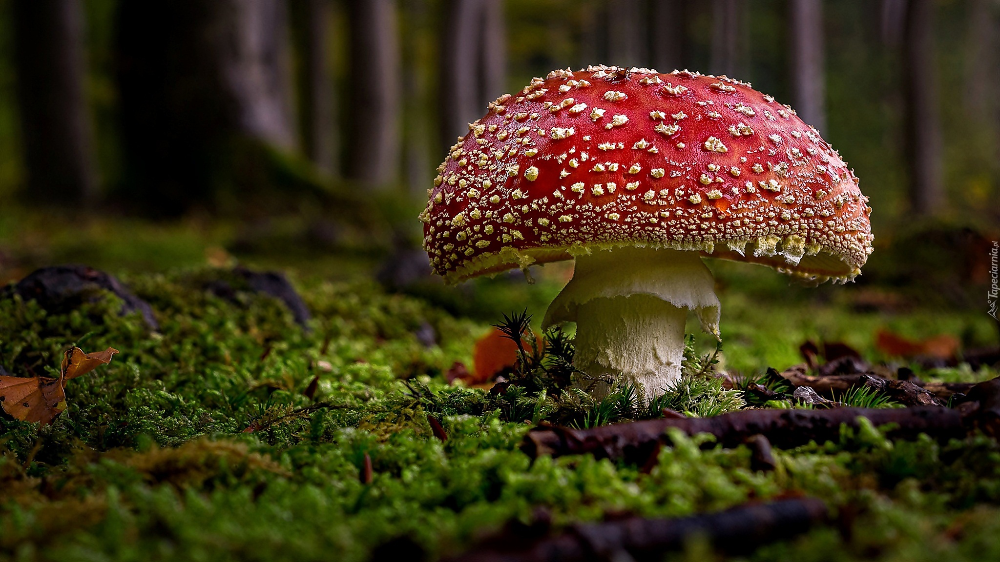

O GRZYBACH

Moim obiektem zainteresowań są wszelkiego rodzaju grzyby. Trzeba zacząć rozwijać ten temat od grzybobrania (jest to zbieranie grzybów). Najlepiej zbierać grzyby parę godzin po deszczu, ponieważ ziemia jest wilgotna, a właśnie takie warunki sprzyjają grzybom. Należy jednak pamiętać, że nie wszystkie grzyby są jadalne. Nie można zbierać takich grzybów jak: wszelkiego rodaju muchomory, koźlarz babka, i inne z cięższymi nazwami np. hełmówki jadowite, czy zasłoniaki rude.
Teraz przejdziemy do grzybów jadalnych np.: borowiki, rydzyki, maślaczki, kurki. Wracając do grybów niejadalnych najciekawszym z nich jest muchomor sromotnikowy(inaczej muchomor zielonkawy). Jak zje go człowiek na pewno zachoruje, a może nawet umrzeć. Natomiast dla takiego ślimaka czy innego owada jest on nieszkodliwy. Ukazuje to różnicę między człowiekiem, a innymi stworzeniami.
Przejdziemy teraz do przyrządzania grzybów. Można je gotować w wodzie, smażyć, piec i gotować na parze. W kwestii składników odżywczych i witamin najlepsze jest pieczenie i gotowanie na parze, poniewać nie mają w czym się rozpuścić. Najlepiej podawać je zamiast mięsa, np.: z ziemniakami i mizerią, lub w zupie.